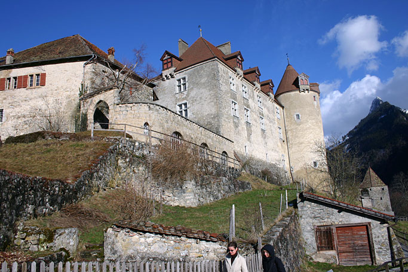
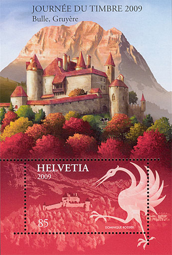
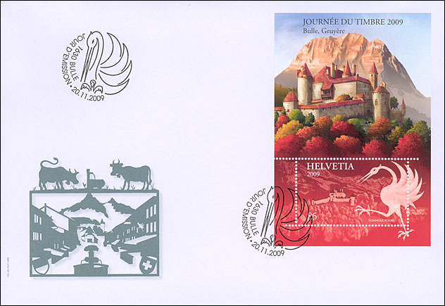
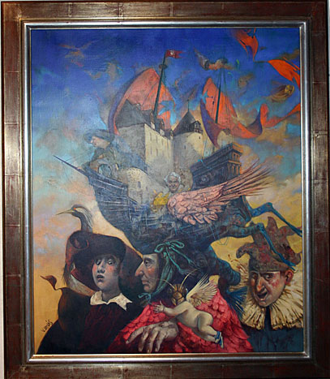
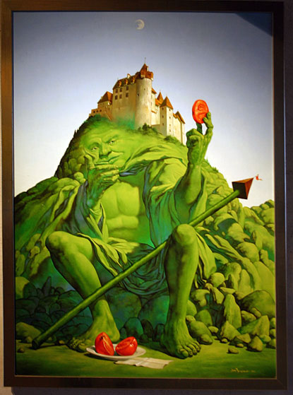
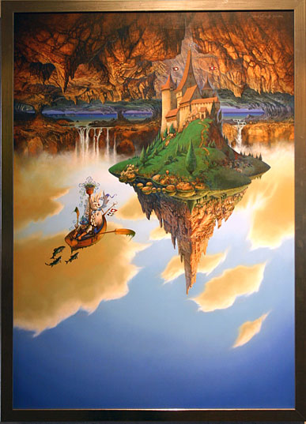
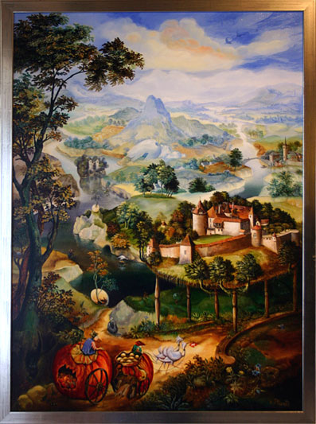
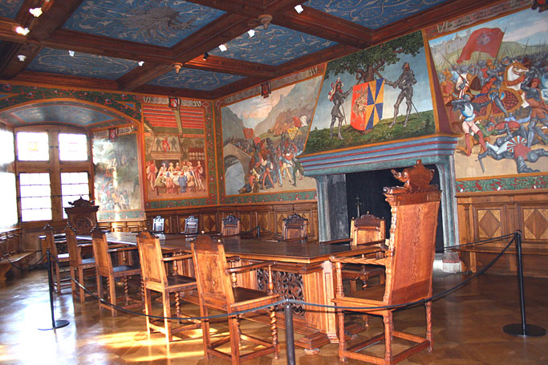
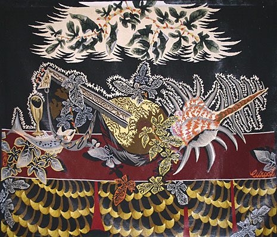
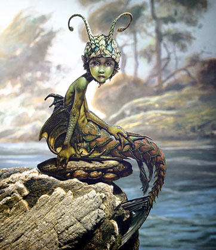

ART at the Gruyère Castle
Perched high on a hill, Gruyères Castle has survived many an upheaval in the course of its history.

This medieval fortress, which has over the centuries been a Renaissance manor house, a Baroque residence, a romantic refuge and a museum, is one of Switzerland’s most-visited monuments. Now the castle is to feature on a CHF 0.85 miniature sheet to mark Stamp Day 2009 in Bulle.

Gruyères Castle stands in a picture-postcard setting, like a seemingly impregnable rock, where several valleys meet at the foot of the Dent-de-Broc and the Moléson mountains.

It was the residence of nineteen Counts of Gruyère, documented since the 11th century, who set their stamp on its history.

Cradle of Switzerland’s last aristocrats, the current castle, built on the foundations of an earlier smaller one, dates back to the late 13th century when Gruyère was allied with Savoy.

Originally built on the Savoy square plan in the fashion of the day, it was remodelled during the Renaissance, when the dynasty was at the height of its power, to make it lighter and more elegant.

The castle was bought and saved by John Bovy, a Genevan watchmaker, who entrusted it to his brother, the painter Daniel Bovy. Daniel transformed it into a romantic summer residence where he lived in the company of artists such as Camille Corot, Barthélemy Menn and Henri Baron.

His influence is still visible in the “Knights Hall” which he painted in the 1850s with spectacular frescoes that are now regarded as the earliest depiction of Gruyère “mythology” with their brilliant colours and blend of legend and historical fact.

In 1938, Canton Fribourg bought the castle back and extensively renovated it.

Gruyères Castle then became a museum, and since 1993, a Foundation working on behalf of the Canton has been in charge of its conservation, restoration, promotion and the collections it houses. Redesigning the reception area was its latest major renovation project (2008). Source: Focus on Stamps. 4/2009.

Gruyères Castle is the home of many permanent and temporary exhibitions of works of art. We show above some photographs taken in 2006, on which we can admire four paintings dedicated to the castle itself, as well as just one of many then exhibited tapestries, by the renown French artist Jean Lurçat.